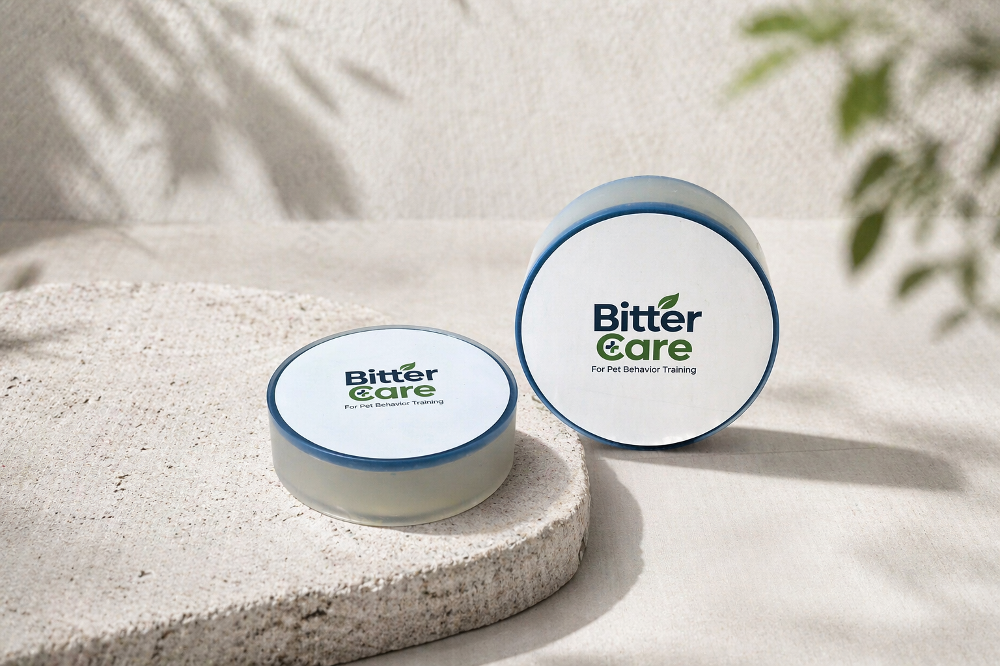

どんな原料ですか？
苦味成分は安息香酸デナトニウムです。ビターケアは英国産プレミアム苦味原料を使用しています。
英国産のプレミアム苦味原料を使用しています。
苦味の役割と家庭での使い方を一緒に見てみましょう。

生活面に苦味を加え、繰り返し口をつける行動のケアを助けます。
苦味成分は安息香酸デナトニウムです。ビターケアは英国産プレミアム苦味原料を使用しています。
貼った面に自然に触れた際、苦味に反応できるようにします。口が触れる位置と密着状態が大切です。
苦味への感度や習慣はそれぞれ。ステッカーをはがす場合は使用を中止し、代わりの噛む物や環境も見直してください。
「英国産」は苦味原料の産地を指し、製品全体が英国製という意味ではありません。食用ではありません。直接なめさせたり体に貼ったりしないでください。
安息香酸デナトニウムは非常に強い苦味のある成分です。一般的な説明は、Bitrexの原料案内をご覧ください。この資料はビターケア製品の認証書や効果保証ではありません。
効果を期待する前に守る基本です。
家具、ドア枠、コード保護箇所など、繰り返し口をつける生活面だけに使用してください。
反応は犬によって異なります。初めは行動と接触位置を観察してください。
塗装面・革・無垢材などは、小さな箇所で試してから使用してください。
実際に口が触れる位置を基準にしてください。
家具の角・ドア枠・テーブルや椅子の脚・コード保護箇所・よく噛んだりなめたりする生活用品の表面
皮膚・被毛・肉球・食器・口にする物・口に入れるおもちゃ・子どもがよく触る場所
苦味への感度、習慣、接触位置、環境によって反応は異なります。反応が弱い場合は位置と密着を確認してください。直接なめさせないでください。
使い始める前によくある質問です。
いいえ。皮膚・被毛・肉球には使わないでください。生活面に貼る製品です。
直接なめさせないでください。よく噛む生活面に貼り、自然に接触する使い方です。
素材によって貼り跡や表面変化が起こることがあります。小さな箇所で試してください。
接触位置と密着を確認し、汚れや使用状況に応じて新しいステッカーに交換してください。
絶縁・感電防止製品ではありません。傷んだコードには使用せず、犬が届かないよう整理を。電源を抜いてから貼ってください。
貼る場所から製品についてのご質問まで。内容を確認後、メールでお返事します。